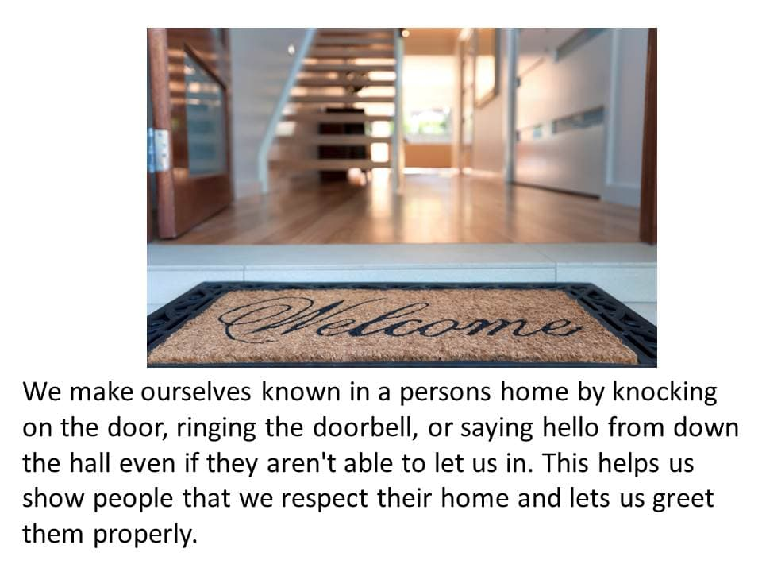

This is the story of a small care at home provider testing the impact of using Caring Conversations to enhance relationships. Caring Conversations is an approach which supports staff, people using the service and their families to relate to each other in more meaningful ways.
In 2014, the Iriss and Scottish Care Fit for the Future project linked with the University of the West of Scotland to explore the application of Caring Conversations in the care at home sector.
Caring Conversations is an approach which supports staff, people using the service and their families to relate to each other in more meaningful ways. It supports people to inquire appreciatively of one another. This appreciative approach is about understanding what works well and what could be done to make this happen more of the time. Using Caring Conversations in practice helps people to enhance their relationships and achieve the senses of security, belonging, continuity, purpose, significance and achievement, which if met for people who access support, families and staff, helps to create enriched care environments (Nolan et al 2006).
Caring Conversations has changed culture and promoted compassion in care homes across Scotland through the My Home Life programme. Despite having success in a hospital and care home setting, Caring Conversations had never been tested in the community with people who work in peoples’ homes. With a policy context in Scotland focusing on delivering care in the community, Caring Conversations could enhance relationships in the community. Rhiann McLean (Iriss) and Professor Belinda Dewar (UWS) redesigned the Caring Conversations development programme into a six-week course for care at home staff, with short periods of contact to fit into a staff team’s busy schedules. This is the story of the process and impact of Caring Conversations in care at home.
Who is the provider?
We chose to work with Advanced Care, a small care provider in Falkirk which supports around 42 older people to live independently at home. Advanced Care believes it is able to deliver more person-centred, flexible care as a small, family-run organisation. The provider approached the Fit for the Future project because they were interested in exploring new ways of working.
Advanced Care was unsure of what the future would hold, particularly in relation to Self Directed Support (SDS). Their experience of SDS in Falkirk was inconsistent and unclear, but they understood that relationships were central in supporting outcomes for older people. In the context of the unknown, Advanced Care was interested in using Caring Conversations to enhance relationships between staff, people who used support and their families.
What is Caring Conversations?
Belinda Dewar’s (2012) work on Compassionate Care provides a vehicle for achieving relationship-centred care through a process of open questioning using “The Seven Cs”:
- Being courageous (e.g. What matters? What would happen if we gave this a go? What is the worst that could happen if you did this?)
- Connecting emotionally (e.g. How did this make you feel?)
- Being curious (e.g. What strikes you about this? What prompted you to act in this way? What helped this to happen? Help me to understand... I wonder...)
- Considering other perspectives (Help me to understand where you are coming from. What do others think? Your perspective is different from mine I wonder...)
- Collaboration (e.g. How can we work together to make this happen? What do you need to do to make this happen? What would you like me to do? Who else could support us?)
- Compromising (What is important to you? What would you like to happen? What is real and possible?)
- Celebrating (What worked well here? Why did it work well? How can we help this to happen more of the time? What are our strengths in being able to achieve this? I value the fact that you are...?)
Who was involved?
- 2 x Iriss facilitators
- 1 x UWS facilitator (Professor Belinda Dewar)
- 10 x Advanced Care staff members taken from all areas of the organisation including care staff, management and administration staff.
The Advanced Care team met with an Iriss facilitator and were given an information sheet and individual staff members volunteered for the course depending on their own interest and availability.
How did we use Caring Conversations?
We had six sessions with a learning group of ten staff members; each session lasted between ninety minutes and two hours. There was also an expectation that the group did work-based activity between the sessions with their colleagues and the people they support.
Week 1: Introduction to the Seven Cs and getting to know each other.
The first week was about getting to know each other, building trust and familiarising ourselves with the Seven Cs.
To find out about each individual’s experience of working in care at home, we asked every member of the learning group to select an image from a set of photo cards that represented the experience of their day to day work. One of the staff chose the image below to represent the pace of their work:

The images helped staff to talk in a different way about their work. It was also fun. We stressed to the group that all of the techniques we were using in the programme were designed to open up dialogue and that they could use these in their day to day work with staff, clients and families.
We spent time with the learning group asking them to identify things that worked well in their interactions, both with their colleagues and with the people they support. They developed a range of themes of what made communication positive and what improved their overall experience.
This gave the chance to identify ‘hidden’ practice: the really positive things that the team did every day. Saying these things out loud and having them affirmed by their colleagues made for a really positive experience where staff members became more aware, confident, and proud of the things they did well and were introduced to saying these things out loud.
Some examples of those ‘hidden practices’ that made for good conversations were:
- Putting people at ease - by asking them about themselves and showing an interest in them as a person
- Making yourself known in someone’s house by greeting them, ringing the doorbell or shouting from the front hall (making sure not to scare them)
- Interaction going both ways: “I can share some of my life with people”
- Hearing someone’s background and learning about them and their family (and being shown photos)
These were all small hidden practices that the group shared and reflected on and the group began to think about why they were so important to relationships.
Work Based Activity:
We asked the learning group to practice one of the seven C’s, Celebrating, by using this resource as a prompt to offer positive feedback to fellow staff members. The group found the first assignment to be forced/awkward, particularly when they were celebrating with staff members who weren’t part of the course group. Reflections on this exercise showed that it had the potential to make people feel good about themselves, but the feedback needed to be specific and in-the-moment to feel genuine to people.
A manager tried to Celebrate someone elses’ contribution at a team meeting, but noticed that her feedback was quite general: “Thank you all for helping out so much over the last few weeks”, instead of perhaps noticing something specific that someone had done well, and feeding back on that specific action. This didn’t have the impact that she was hoping for, because it wasn’t directed at an individual, and the staff members responded by “shrugging it off”. The group spoke at length about the ways that people respond to positive feedback, and that it could be frustrating or discouraging if you didn’t get the response you were hoping for. There was a hesitancy to actually give feedback directly to the person it was relevant to:
"I think we might be giving feedback to the wrong people sometimes" (i.e. telling other staff members how great it was to work with Michelle this morning, but not telling Michelle herself)
At the end of each session we took five minutes to discuss what we had learned and valued from our time together, getting the group to become more comfortable with reflection and celebration.
Week 2: Playing around with the Seven Cs and language
We began the second session by considering how engaging in Caring Conversations can facilitate the delivery of a high quality service by helping everyone involved to achieve a sense of:
- Security - you and others feel safe in giving or receiving care
- Belonging - you and others feel a part of things
- Purpose - you and others have a clear sense of what you want to achieve
- Continuity - you and others recognise the importance of the past and present informing the future
- Achievement - you and others feel valued and understand what contribution you make
- Significance - you and others feel that you matter
(Based on Nolan et al’s Senses Framework, 2006)
We asked the learning group to try out using the Seven Cs in a role enactment based on a scenario from their everyday practice. The group chose to work through an example around which they had had challenges, which was relevant to all involved so that everyone could contribute.
The scenario we considered was of a staff member working in the home of someone who was smoking, with the staff member obliged to ask the person to cease smoking in line with the organisation’s policy on providing a smoke-free working environment. One of the facilitators played the role of the person receiving support, and one of the staff members was asked to interact with the person as they normally would.
The initial conversation was challenging because it was focused on the policy and had no space for compromise:
"Would you mind not smoking while I'm here please, because we have a policy that says that staff can't be in someone’s home if they're smoking."
The group reflected that it was a challenge to strike the balance between the professional and the personal, and that falling back on policy seems only to reinforce the power structures of ‘professional knows best’ rather than providing a justification.
The group tried the role enactment again using some of the Seven Cs to guide them:
Connecting emotionally
“I feel quite worried to bring this up, because I really enjoy our visits, but there can’t be any smoking while I’m here. I wonder how you feel about that?”
Collaborate/compromise
"My boyfriend’s a smoker so I know just how tough it can be. What could we do to help to make the couple of non-smoking hours a bit easier?"
Work Based Activity:
We asked the learning group to use the following appreciative questions with the people they were supporting to find out how they felt about the support they were receiving using this tool.
The group fed back that they had found using the specific wording of the questions a challenge, and had instead used their own words. We considered the importance of how the questions are worded: “Are you satisfied with your service?” is not the same as asking “What is working well?” We also discussed the assumptions we make that those we work with would tell us if they like/don’t like something, and that it’s important not to assume that any individual “wouldn’t be the right person to ask.”
Some members of the group had used the appreciative language and had had some rewarding conversations as a result. One staff member described how she felt about this:
“Mixed feelings – it’s great to know what we’re doing well, but I also acknowledge that we don’t get everything right all the time. It’s frustrating that we can’t get it perfectly right for everyone all the time so I was feeling inadequate.”
Week 3: Developing positive practice statements
What is a positive practice statement?
A positive care practice statement is a statement that reflects actual positive practices that are currently happening in care. These statements are created and owned by the staff themselves and use illustrative examples grounded in practice. They are phrased as ‘already happening’ and include the celebration of hidden practices that make a big difference. Positive care practices help a staff team to celebrate and share the things that work well.
We introduced the idea of positive practice statements using examples of Advanced Care’s beautiful practice which the facilitators had collected from the first two sessions.
The group really connected with the statements, feeling validated that the seemingly unimportant things that they did day-to-day were really meaningful. The group changed the language of the statements to make them more their own.
We then asked the group to build their own positive practice statements together. We challenged them to use real examples and they challenged us on being too wordy! We then asked the group to select an image that they felt represented each statement from the photocards. This exercise seemed to really click with the group: they took ownership of the statements and told us that they were beginning to ‘really get’ what Caring Conversations was all about.

Work Based Activity:
We then focussed on staff-to-staff interaction. We asked the learning group to think about their beliefs and values around staff interaction using this tool. Some of the group members struggled to find time for the assignment because the next week’s session followed very quickly, but we still had a meaningful discussion. The feedback focused around what the learning group wanted from team meetings: sharing experiences and getting support from colleagues to improve practice. The group also wanted to feel more supported and celebrated, and wanted team meetings to be less about one-way information sharing and more about constructive conversation.
Week 4: A focus on staff-to-staff interactions
This week focused on understanding what makes team meetings a positive experience and used role enactment to explore ways to diffuse a heated meeting using the Seven Cs.
The group felt that good team meetings gave staff members the space to discuss what was working well, and how they might do more of the things that worked well together.
We asked the group to enact a tense team meeting where one colleague was struggling with a particular issue. In the first enactment, the group noticed that they were being defensive towards this colleague with the feeling that the person might be overreacting. The group tried the conversation again, this time making a conscious effort to Connect Emotionally with their colleague and share their own experiences:
“That sounds really frustrating”
“I’m feeling quite upset because I’m not sure what I can do to make this any easier”
“Doing ... has worked for me, could we try that?”
The group had a few suggestions on how to improve communication in team meetings, such as setting aside five minutes as the end of each meeting to Celebrate what had gone well that week. The group took these ideas away with them to try out.
Work Based Activity:
We asked the learning group to consciously use the Seven Cs in their next team meeting, with printed copies of the Seven Cs on hand as a prompt for themselves and other staff members. We also asked the group to be Curious with other team members about what makes a good team meeting. Feedback from this exercise was that the group felt uncomfortable using the Seven Cs cards at the team meeting as it felt unnatural to them, but they did notice they were doing more of the Seven Cs, though not overtly using the language. The group also noticed that they were making assumptions about what others were feeling about team meetings: “She probably can’t wait to be done here... she’s got other things to do” but not being curious with others to check out these assumptions.
Week 5: A focus on staff-to-staff interactions
This week we looked again at enhancing communication in team meetings using role enactment and positive practice statements.
The group reflected that the attempt to include five minutes of Celebrating in a team meeting had felt forced, and that the purpose of the five minutes wasn’t made clear to other staff members.
We watched a video on positive team meeting practice and the group commented on what worked well, and what they would like to do more of. Following this, we acted out a team meeting incorporating these suggestions, basing the scenario on a real issue presenting challenges to the group. On pausing to reflect on the conversation, the group noticed that they were making assumptions about someone they were supporting who they felt would resist change. The group then re-tried the enactment, this time heightening their use of the Seven Cs and making them more overt. The group found it a challenge not to jump straight to fixing the problem, and we discussed the difficulty of taking time to find a Compromise when teams need to make decisions quickly.
We then developed positive practice statements based on the group’s experiences of feeling supported. One staff member told the story of how nervous she was about using new equipment in someone’s house. She was afraid of looking as though she didn’t know what she was doing, or that she would make the person feel unsafe, especially because she was just getting to know her. When she mentioned this to a colleague, that colleague took the time to set up the equipment for her before her first shift, so she didn’t have to worry about it. It made her feel appreciated and supported and she took the time to text her colleague to say thanks.
We noticed in this session that the learning group were beginning to use inquiring language like “I wonder” to change the way that they were approaching things, rather than “I think that..” or “you should.”
Work Based Activity:
We asked the group to come up with their own positive practice statements using real examples, and to select an image to accompany each statement. Most people did bring a statement to the next session, but many had found it a challenge. The group then worked together to refine the statements and to think about how they might use them.
Week 6: Our learning and actions
This week was focused on evaluation and using emotional touchpoints to understand the group’s experience of taking part in Caring Conversations.
Confident
“The course has helped me to feel more confident to ask questions. I don’t think I did this so much before but I feel more confident with other staff and the clients we are working with.”
Proud
“I think a lot of the things we learnt were all things we do anyway but it was nice to have other people notice and value these things – sort of point them out to us. I recognise all the little things and the ways of talking much more.”
Awkward and a bit silly
“I felt a bit awkward with the role play but I am glad we did it – I will remember the learning”
We asked the group to reflect on their experience of the process and comment on the facilitation and approach to learning:
“I really feel able to say what I feel and not be judged – it was like when I asked you to read the statement again because I didn’t get it – I was able to do this.”
We then asked that each group member sent themselves a postcard detailing what they wanted to change in their own practice and making a promise to themselves to do this.
How did people respond to the process?
The group was really proud of what they managed to achieve in a short space of time and how they adapted to this kind of learning. The group made the distinction between “book learning” and the work they did together as a group:
“It’s all wonderful ... that there’s so many people open to this type of learning.”
The group valued hearing from each other, and working together to create a vibrant, dynamic vision for the company using the positive practice statements. At the end of the process the group felt they shared a deeper relationship with each other.
“I feel it has been a privilege to hear more about what others have to say in the group but also with clients. I’m taking the time to do that more and I have noticed a difference – we are all singing from the same hymn sheet. Those of us that have been on the course kind of have a special bond now.”
There was a lot of material to take in, and the group found it easier to focus on one or two of the Seven Cs at a time. The team didn’t find any of the Caring Conversations language overcomplicated, which meant they were able to pick it up quickly and apply it day-to-day with ease, despite the short length of the course.
The group felt awkward when trying new things even within the sessions, so we kept the tone quite light and made it OK to feel uncomfortable.
Developing the positive practice statements together and linking these with images was a revelatory process for the group. The group’s collection of positive caring practices began to form a live and dynamic vision of the way Advanced Care do things, which could be used for lots of different purposes: in recruitment, in reviews, in welcome packs. It was really important that the group had true ownership of the statements, and felt proud of their practice as a result. After the course, one staff member from the office said that she had submitted the statements to the local authority as part of the job description for new care staff. They also used these vision statements as a way to explore what made them different from other providers, for example, their flexibility around time.

The foundation of Caring Conversations is an appreciative approach, focusing on what works rather than a negative narrative. Through the process of Caring Conversations, the group began to do this themselves and needed fewer prompts about where to focus their learning.
Having the managers working as part of the group was really important. It wouldn’t be reasonable to expect a group of staff to embed the Caring Conversations model within their organisation without strong management support and engagement.
The group took very quickly to applying their learning to their interactions and tested it out during the sessions. Here was a moment where a manager praised a staff member for being so insightful (Celebrate) and in that moment we focused on how that made the staff member feel:
“It makes me feel on top of the world.”
What were the outcomes?
During the course of the project, individuals were able to identify the impact of their time with the group, and were beginning to identify small things they had changed.
Generally, the group felt that Caring Conversations was a way for them to really focus on relationships with the people they supported and gave them the tools to enhance relationships.
"I feel like it evolves your relationship with a person.."
The group left with a way of working that they felt was practical and they could use going forward.
“We used Caring Conversations with a client who wasn’t happy with a staff member. The client took a dislike to her.. but we asked and asked to find out why it was. She just wasn’t happy with how the staff member spoke. We called the carer and said, you know she’s not happy and the carer wanted to go back, to find out why, to apologise and to keep working together. That was really brave of the carer, and they did a great job of not being defensive, but just thinking, yeah I want to know more and I want to work on this.”
The group also implemented practical, structural changes through action research cycles. An example of this was the introduction of a dedicated five minutes of celebrations at the end of team meetings to focus on achievements.
The group felt really proud of themselves and what they had achieved together. They started to think more about the assumptions that they made about people they worked with and supported.
"It gets you thinking."
The process also encouraged the group to acknowledge the pace of their work; this helped them to slow down as much as possible and really think, notice, collaborating with people.
“I used to be quite a black and white person, like I make decisions instantly... obviously I sort of thought about what the service user wanted. But I had no issue saying what I decided straight away but I think now I realised that’s not always the best way to be and you should think about people’s circumstances... be curious as to why people are the way they are..”
There was a recognition of the tension in care at home between doing tasks and building relationships. The group really noticed that their job was more than just completing tasks:
“I used to think a lot of our work was doing, but now it’s reflective. It is very much doing but there is now that element that it’s reflective.”
“I’m a lot happier in my work. You’re looking at people differently, not just thinking about getting them washed, dressed and all that, but you’re learning about them... getting to know them. I come in and I say... ‘I just had a really good visit’.”
Focusing on the relational hidden practice that sits alongside the tasks in care at home legitimised and validated these seemingly inconsequential interactions, bringing the group satisfaction and pride in work they did.
The learning group also considered their role in peoples’ homes and how issues of power impacted on their relationships. They noticed how important it is to have really good relationships to put people at ease and help them work together.
“Things are different in care at home...the power dynamic is different because it’s their home, and you’re both nervous.”
The group noticed the impact of their language on relationships, and how using different words could have a noticeable impact. At the end of the course the group members reflected on paying more attention to their language:
“I’m definitely more careful about how I communicate... what I say.”
One of the C’s that the group seemed to find most useful and powerful was ‘Connecting emotionally’. They found it valuable to share their own feelings with their colleagues and people they support as well as being interested in how the other person was feeling.
"What I've really taken away is that you can't change how someone feels."
The future
We hope that the lessons from this small test of Caring Conversations in a community setting demonstrates the potential of the approach.
We learned some key lessons from this pilot and if we were to deliver the programme again we would hope to:
- Extend the period of contact to at least 10 weeks to cover the topics in more depth
- Hold a team meeting with the full team, using Caring Conversations and pausing to reflect on interactions throughout the meeting
- Support better embedding of Caring Conversations by dedicating time to supporting the members of the group to take a larger role as ‘influencers’
- Carry out a more robust evaluation of the impact of Caring Conversations on people who use support and their families.
References
Dewar B (2010) Editorial: Appreciative Inquiry, International Journal of Older People Nursing, 5, 290-291
Dewar B and Nolan M (2013) Caring about caring: Developing a model to implement compassionate relationship centred care in an older people care setting, International Journal of Nursing Studies, DOI: 10:1016\j.ijnurstu2013.01.008